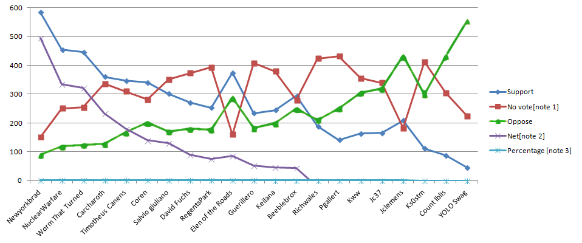
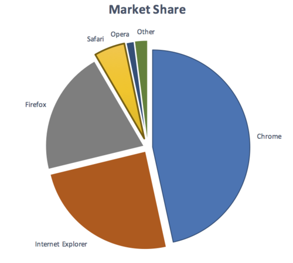
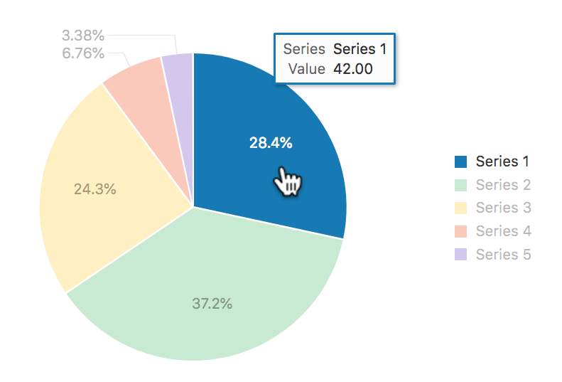
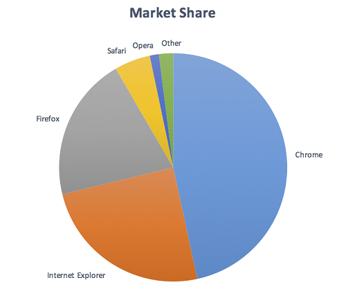
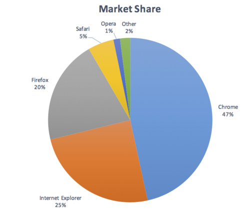
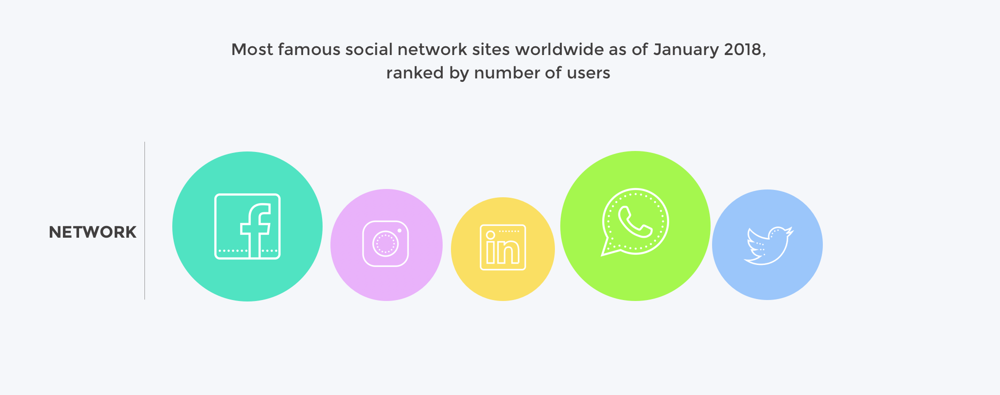
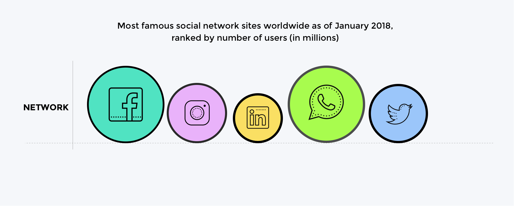

Understanding SC 1.4.11 Non-text Contrast (Level AA)
In Brief
- Goal
- Important visual information meets the same minimum contrast required for larger text.
- What to do
- Ensure meaningful visual cues achieve 3:1 against the background.
- Why it's important
- Some people cannot see elements with low contrast.
Success Criterion (SC)
The visual presentation of the following have a contrast ratio of at least 3:1 against adjacent color(s):
- User Interface Components
- Visual information required to identify user interface components and states, except for inactive components or where the appearance of the component is determined by the user agent and not modified by the author;
- Graphical Objects
- Parts of graphics required to understand the content, except when a particular presentation of graphics is essential to the information being conveyed.
Intent
The intent of this success criterion is to ensure that user interface components (i.e., controls) and meaningful graphics are distinguishable by people with moderately low vision. The requirements and rationale are similar to those for large text in 1.4.3 Contrast (Minimum). Note that this requirement does not apply to inactive user interface components.
Low contrast controls are more difficult to perceive, and may be completely missed by people with a visual impairment. Similarly, if a graphic is needed to understand the content or functionality of the web page then it should be perceivable by people with low vision or other impairments without the need for contrast-enhancing assistive technology.
Note
The 3:1 contrast ratios referenced in this success criterion is intended to be treated as threshold values. When comparing the computed contrast ratio to the success criterion ratio, the computed values should not be rounded (e.g. 2.999:1 would not meet the 3:1 threshold).
Note
Because authors do not have control over user settings for font smoothing and anti-aliasing, when evaluating this Success Criterion, refer to the colors obtained from the user agent, or the underlying markup and stylesheets, rather than the non-text elements as presented on screen.
Due to anti-aliasing, particularly thin lines and shapes of non-text elements may be rendered by user agents with a much fainter color than the actual color defined in the underlying CSS. This can lead to situations where non-text elements have a contrast ratio that nominally passes the Success Criterion, but have a much lower contrast in practice. In these cases, best practice would be for authors to avoid particularly thin lines and shapes, or to use a combination of colors that exceeds the normative requirements of this success criterion.
User Interface Components
Unless the control is inactive, any visual information provided that is necessary for a user to identify that a control is present and how to operate it must have a minimum 3:1 contrast ratio with the adjacent colors. Also, any visual information necessary to indicate state, such as whether a component is selected or focused must also ensure that the information used to identify the control in that state has a minimum 3:1 contrast ratio.
This success criterion does not require that changes in color that differentiate between states of an individual component meet the 3:1 contrast ratio when they do not appear next to each other. For example, there is not a new requirement that visited links contrast with the default color, or that mouse hover indicators contrast with the default state. However, the component must not lose contrast with the adjacent colors, and non-text indicators such as the check in a checkbox, or an arrow graphic indicating a menu is selected or open must have sufficient contrast to the adjacent colors.
Boundaries
This success criterion does not require that controls have a visual boundary indicating the hit area. If a control has visible content (such as text or a sufficiently contrasting icon), which helps users identify the presence of the control, then a border or other indication of the overall boundary of the hit area is not required, as is therefore not subject to non-text contrast requirements. Having a visual boundary indicating the hit area is only required when there is no other visual way to identify the presence of the control – and in those cases, the boundary must have sufficient non-text contrast in order to pass this success criterion.
Note
Even when a control does not need to have a visual boundary indicating its hit area, it will still need to have a sufficiently contrasting focus indication.
Note
For people with cognitive disabilities, it is a best practice to delineate the boundary of all controls, even those that have visible content, to aid in the recognition of controls and the completion of activities.
Figure 1.
Pass: A button without a visual boundary – the button's text is sufficient to indicate the presence of the control. The same button, when focused, still has a sufficiently contrasting focus indicator (grey #949494 against white, with a contrast ratio of 3:1).
Adjacent colors
For user interface components 'adjacent colors' means the colors adjacent to the component. For example, if an input has a white internal background, dark border, and white external background the 'adjacent color' to the component would be the white external background.
Figure 2.
Pass: A standard text input with a grey border (#767676) and white adjacent color outside the component
If components use several colors, any color which does not interfere with identifying the component can be ignored for the purpose of measuring contrast ratio. For example, a 3D drop-shadow on an input, or a dark border line between contrasting backgrounds is considered to be subsumed into the color closest in brightness (perceived luminance).
The following example shows an input that has a light background on the inside and a dark background around it. The input also has a dark grey border which is considered to be subsumed into the dark background. The border does not interfere with identifying the component, so the contrast ratio is taken between the white background and dark blue background.
Figure 3.
Pass: The contrast of the input background (white) and color adjacent to the control (dark blue #003366) is sufficient. There is also a border (silver) on the component that is not required to contrast with either.
For visual information required to identify a state, such as the check in a checkbox or the thumb of a slider, that part might be within the component so the adjacent color might be another part of the component.
Figure 4.
Pass: A customized checkbox with light grey check (#E5E5E5), which has a contrast ratio of 5.6:1 with the purple box (#6221EA).
It is possible to use a flat design where the status indicator fills the component and does not contrast with the component, but does contrast with the colors adjacent to the component.
Figure 5.
Pass: The first radio button shows the default state with a grey (#949494) circle. The second and third show the radio button selected and filled with a color that contrasts with the color adjacent to the component. The last example shows the state indicator contrasting with the component colors.
Relationship with Use of Color
The Use of Color success criterion addresses changing only the color (hue) of an object or text without otherwise altering the object's form. The principle is that contrast ratio (the difference in brightness) can be used to distinguish text or graphics. For example, G183: Using a contrast ratio of 3:1 with surrounding text and providing additional visual cues on hover for links or controls where color alone is used to identify them is a technique to use a contrast ratio of 3:1 with surrounding text to distinguish links and controls. In that case the Working Group regards a link color that meets the 3:1 contrast ratio relative to the non-linked text color as satisfying the Success Criterion 1.4.1 Use of color since it is relying on contrast ratio as well as color (hue) to convey that the text is a link.
Non-text information within controls that uses a change of hue alone to convey the value or state of an input, such as a 1-5 star indicator with a black outline for each star filled with either yellow (full) or white (empty) is likely to fail the Use of color criterion rather than this one.
Figure 6. Pass: Two examples which pass this success criterion, using either a solid fill to indicate a checked-state that has contrast, or a thicker border as well as yellow fill.
Figure 7.
Fail: The first example fails the Use of color criterion due to relying on yellow and white hues. The second example fails the Non-text contrast criterion due to the yellow (#FFF000) to white contrast ratio of 1.2:1.
Using a change of contrast for focus and other states is a technique to differentiate the states. This is the basis for G195: Using an author-supplied, visible focus indicator, and more techniques are being added.
Relationship with Focus Visible
In combination with 2.4.7 Focus Visible, the visual focus indicator for a component must have sufficient contrast against the adjacent background when the component is focused, except where the appearance of the component is determined by the user agent and not modified by the author.
Most focus indicators appear outside the component - in that case it needs to contrast with the background that the component is on. Other cases include focus indicators which are:
- only inside the component and need to contrast with the adjacent color(s) within the component.
- the border of the component (inside the component and adjacent to the outside) and need to contrast with both adjacent colors.
- partly inside and partly outside, where either part of the focus indicator can contrast with the adjacent colors.
Figure 8.
Pass: The internal yellow indicator (#FFFF00) contrasts with the blue button background (#4189B9).
Figure 9.
Fail: The external yellow indicator (#FFFF00) does not contrast with the white background (#FFF) which the component is on.
Figure 10.
Pass: The external green indicator (#008000) does contrast with the white background (#FFF) which the component is on. It does not need to contrast with both the component background and the component, as visually the effect is that the button is noticeably larger, and it's not necessary for a user to be able to discern this extra border in isolation. Although this passes non-text contrast, it is not a good indicator unless it is very thick. New in WCAG 2.2: There is a AAA criterion in WCAG 2.2 that addresses this aspect, Focus Appearance.
If an indicator is partly inside and partly outside the component, either part of the indicator could provide contrast.
Figure 11.
Pass: The focus indicator is partially inside, partially outside the button. The internal part of the yellow indicator (#FFFF00) contrasts with the blue button background (#4189B9).
If the focus indicator changes the border of the component within the visible boundary it must contrast with the component. Typically an outline goes around (outside) the visible boundary of the component, in this case changing the border is just inside the visible edge of the component.
Figure 12.
Fail: The border of the control changes from blue (#4189B9) to green (#4B933A). This is within the component and does not contrast with the inside background of the component.
Figure 13.
Fail: An inner border of dark green (#008000) does contrast with the black border, but does not contrast with the blue component background.
Figure 14. Pass: An inner border of white contrasts with the black border and the blue component background.
Note that this success criterion does not directly compare the focused and unfocused states of a control - if the focus state relies on a change of color (e.g., changing only the background color of a button), this success criterion does not define any requirement for the difference in contrast between the two states.
Figure 15. Not in scope: The change of background within the component is not in scope of non-text contrast. However, this would not pass Use of color.
Hover states
The language of Non-text Contrast specifically calls out "visual information required to identify...states." When users talk about a hover state, they are normally referring to a visual effect that takes place when the pointer is positioned over a control. However, there are a number of HTML components (such as buttons, checkboxes, radio buttons, and selects) which do not by default display any additional visual effects when the user moves a pointer control over them. The pointer itself, via its location, is the indicator of whether the user is hovering on a component. Therefore, additional author-supplied visual treatments for hover are not "required to identify" the hover state. Those treatments can be considered supplemental and do not themselves need to contrast 3:1 against the background.
This is not to say that other hover effects are discouraged. For instance, some native components alter the shape of the pointer when it is hovering over a control; the pointer becomes an I-beam when it hovers over text inputs and text areas. There will be cases where some users may benefit from additional visual hover effects, such as bolding text or use of drop shadows. However, other users may find strong hover effects distracting. The key consideration for any hover effect is that it does not cause a component itself to lose sufficient contrast against adjacent colors, or cause the visual indicators for other states, such as focus or selection, to lose sufficient contrast.
User Interface Component Examples
For designing focus indicators, selection indicators and user interface components that need to be perceived clearly, the following are examples that have sufficient contrast.
| Type | Description | Examples |
|---|---|---|
| Link text | The browser's default link text color is covered by 1.4.3 Contrast (Minimum). Since the underline is the same color as the text, which must meet at least 3:1 to pass, the default underline will always pass the requirements of Non-text Contrast. | |
| Default focus style | Links are required to have a visible focus indicator by 2.4.7 Focus Visible. Where the focus style of the user agent is not adjusted on interactive controls (such as links, form fields or buttons) by the website (author), the default focus style is exempt from contrast requirements (but must still be visible). | |
| Buttons | A button which has a distinguishing indicator such as position, text style, or context does not need a contrasting visual indicator to show that it is a button, although some users are likely to identify a button with an outline that meets contrast requirements more easily. | |
| Text input (minimal) | Where a text-input has a visual indicator to show it is an input, such as a bottom border (#767676), that indicator must meet 3:1 contrast ratio. |
|
| Text input | Where a text-input has an indicator such as a complete border (#767676), that indicator must meet 3:1 contrast ratio. |
|
| Text input focus style | A focus indicator is required. While in this case the additional gray (#CCC) outline has an insufficient contrast of 1.6:1 against the white (#FFF) background, the cursor/caret which is displayed when the input receives focus does provide a sufficiently strong visual indication. |
|
| Text input using background color | Text inputs that have no border and are differentiated only by a background color must have a 3:1 contrast ratio to the adjacent background (#043464). |
|
| Toggle button | The toggle button's internal background (#070CD5) has a good contrast with the external white background. Also, the round toggle within (#7AC2FF) contrasts with the internal background. |
|
| Dropdown indicator | The down-arrow is required to understand that there is drop-down functionality, it has a contrast of 4.7:1 for the white icon on dark gray (#6E747B). |
|
| Dropdown indicator | The down-arrow is required to understand that there is drop-down functionality, it has a contrast of 21:1 for the black icon on white. | |
| Checkbox - empty | A black border on a white background indicates the checkbox. | |
| Checkbox - checked | A black border on a white background indicates the checkbox, the black tick shape indicates the state of checked. | |
| Checkbox - Subtle hover style | A checkbox is visually identified by its black border against a white background, but when the mouse pointer hovers on the checkbox, a subtle grey background is added (#DEDEDE). The black border has a 15:1 contrast ratio with the grey background, so the checkbox continues to have good contrast. Note that the grey hover effect does not itself need to contrast 3:1 with the page background, since the pointer position is the primary indicator of the hover state. |
The following are examples that have insufficient contrast.
| Type | Description | Examples |
|---|---|---|
| Colored underline is the only indicator of a link | Link and non-link text are both white on an almost-black (#0D0F13) background. The link's custom underline (#B1262B) is the only way to identify the link. The red underline contrasts less than 3:1 with the background color. |
|
| Checkbox - border color | The grey border color of the checkbox (#9D9D9D) has a contrast ratio of 2.7:1 with the white background, which is not sufficient for the visual information required to identify the checkbox. |
|
| Checkbox - subtle focus style | A focus indicator is required. If the focus indicator is styled by the author, it must meet the 3:1 contrast ratio with adjacent colors. In this case, the gray (#AAA) indicator has an insufficient ratio of 2.3:1 with the white (#FFF) adjacent background. |
|
| Text input - low contrast customized caret as only focus indication | The only focus indication provided by the input is the customized caret / cursor; the light-blue color (#00C7FD) has a contrast lower than 3:1 against the interior white background color of the input, so the focus indication fails this criterion. |
|
| Text input - no label or other indication, low contrast border | The text input lacks any form of label to hint at its presence. The border color (#AAA) has contrast lower than 3:1 against its adjacent white background. As the border here is required to identify the presence of the input, it must have sufficient contrast to pass this criterion. |
Inactive User Interface Components
User Interface Components that are not available for user interaction (e.g., a disabled control in HTML) are not required to meet contrast requirements. An inactive user interface component is visible but not currently operable. An example would be a submit button at the bottom of a form that is visible but cannot be activated until all the required fields in the form are completed.
Figure 16. An inactive button using default browser styles
Inactive components, such as disabled controls in HTML, are not available for user interaction. The decision to exempt inactive controls from the contrast requirements was based on a number of considerations. Although it would be beneficial to some people to discern inactive controls, a one-size-fits-all solution has been very difficult to establish. A method of varying the presentation of disabled controls, such as adding an icon for disabled controls, based on user preferences is anticipated as an advancement in the future.
Graphical Objects
The term "graphical object" applies to stand-alone icons such as a print icon (with no text), and the important parts of a more complex diagram such as each line in a graph. For simple graphics such as single-color icons the entire image is a graphical object. Images made up of multiple lines, colors and shapes will be made of multiple graphical objects, some of which are required for understanding.
Not every graphical object needs to contrast with its surroundings - only those that are required for a user to understand what the graphic is conveying. Gestalt principles such as the "law of continuity" can be used to ignore minor overlaps with other graphical objects or colors.
| Image | Notes |
|---|---|
The phone icon is a simple shape within the orange ( The graphical object is the white phone icon. |
|
A magnet can be understood by the "U" shape with lighter colored tips. Therefore to understand this graphic you should be able to discern the overall shape (against the background) and the lighter colored tips (against the rest of the U shape and the background). The graphical objects are the "U" shape (by outline or by the solid red color #D0021B), and each tip of the magnet. |
|
The symbol to show a currency (the £) going down can be understood with recognition of the shape (down arrow) and the currency symbol (pound icon with the shape which is part of the graphic). To understand this graphic you need to discern the arrow shape against the white background, and the pound icon against the yellow background ( The graphical objects are the shape and the currency symbol. |
|
|
 |
In order to understand the graph you need to discern the lines and shapes for each condition. To perceive the values of each line along the chart you need to discern the grey lines marking the graduated 100 value increments. The graphical objects are the lines in the graph, including the background lines for the values, and the colored lines with shapes. The lines should have 3:1 contrast against their background, but as there is little overlap with other lines they do not need to contrast with each other or the graduated lines. (See the testing principles below.) |
 |
To understand the pie chart you have to discern each slice of the pie chart from the others. The graphical objects are the slices of the pie (chart). Note: If the values of the pie chart slices were also presented in a conforming manner (see the Pie Charts example for details), the slices would not be required for understanding. |
{kind=link}
{kind=link}
Taking the magnet image above as an example, the process for establishing the graphical object(s) is to:
- Assess what part of each image is needed to understand what it represents.
The magnet's "U" shape can be conveyed by the outline or by the red background (either is acceptable). The white tips are also important (otherwise it would be a horseshoe), which needs to contrast with the red background. - Assume that the user could only see those aspects. Do they contrast with the adjacent colors?
The outline of the magnet contrasts with the surrounding text (black/white), and the red and white between the tips also has sufficient contrast.
Due to the strong contrast of the red and white, it would also be possible to only put the outline around the white tips of the magnet and it would still conform.
Required for Understanding
The term "required for understanding" is used in the success criterion as many graphics do not need to meet the contrast requirements. If a person needs to perceive a graphic, or part of a graphic (a graphical object) in order to understand the content it should have sufficient contrast. However, that is not a requirement when:
-
A graphic with text embedded or overlaid conveys the same information, such as labels and values on a chart.
Note
Text within a graphic must meet 1.4.3 Contrast (Minimum).
- The graphic is for aesthetic purposes that does not require the user to see or understand it to understand the content or use the functionality.
- The information is available in another form, such as in a table that follows the graph, which becomes visible when a "Long Description" button is pressed.
- The graphic is part of a logo or brand name (which is considered "essential" to its presentation).
Logos
Logos are exempted from contrast requirements, under the assumption that they must comply with stricter color choices mandated by corporate identity or brand guidelines. However, this can be problematic when logos act as user interface components (such as a link or other interactive control). In these cases, as a best practice, authors should consider choosing a variant of the logo that has sufficient contrast, if allowed by the corporate identity or brand guidelines. Alternatively, authors should consider providing an equivalent user interface component which serves the same purpose and meets contrast requirements.
If logos are presented with an insufficient contrast, but their presentation was an author choice rather than being mandated by corporate identity or brand guidelines, then that particular low contrast presentation is not "essential", and the logo is not exempt from the contrast requirements.
Figure 17. An author chooses to present company logos with low contrast by default, until they are hovered; the fact that these are logos doesn't exempt this scenario from failing the requirements of this success criterion, as the initial low contrast presentation is not "essential"
Gradients
Gradients can reduce the apparent contrast between areas, and make it more difficult to test. The general principles is to identify the graphical object(s) required for understanding, and take the central color of that area. If you remove the adjacent color which does not have sufficient contrast, can you still identify and understand the graphical object?
Figure 18. Removing the background which does not have sufficient contrast highlights that the graphical object (the "i") is not then understandable.
Dynamic Examples
Some graphics may have interactions that either vary the contrast, or display the information as text when you mouseover/tap/focus each graphical object. In order for someone to discern the graphics exist at all, the unfocused default version must already have sufficiently contrasting colors or text. For the area that receives focus, information can then be made available dynamically as pop-up text, or be foregrounded dynamically by increasing the contrast.

Figure 19. A dynamic chart where the current 'slice' is hovered or focused, which activates the associated text display of the values and highlights the series
Infographics
Infographics can mean any graphic conveying data, such as a chart or diagram. On the web it is often used to indicate a large graphic with lots of statements, pictures, charts or other ways of conveying data. In the context of graphics contrast, each item within such an infographic should be treated as a set of graphical objects, regardless of whether it is in one file or separate files.
Infographics often fail to meet several WCAG level AA criteria including:
An infographic can use text which meets the other criteria to minimize the number of graphical objects required for understanding. For example, using text with sufficient contrast to provide the values in a chart. A long description would also be sufficient because then the infographic is not relied upon for understanding.
Symbolic text characters
When text characters are used as symbols – used for their visual appearance, rather than expressing something in human language
– they fall under the definition of non-text content.
Figure 20. Even though the two buttons use text characters — an uppercase X
, often used for "Close" buttons, and a >
character, to act as a right-pointing arrow — they count as non-text characters/symbols. Their contrast ratio of just above 3:1 passes this success criterion.
Essential Exception
Graphical objects do not have to meet the contrast requirements when "a particular presentation of graphics is essential to the information being conveyed". The Essential exception is intended to apply when there is no way of presenting the graphic with sufficient contrast without undermining the meaning. For example:
- Logos and logotypes: The brand logo of an organization or product is the representation of that organization, and is often presented in the brand's specific colors; it is therefore exempt.
- Flags: Flags may not be identifiable if the colors are changed to have sufficient contrast.
- Sensory: There is no requirement to change pictures of real life scenes such as photos of people or scenery.
- Representing other things: If you cannot represent the graphic in any other way, it is essential. Examples include:
- Screenshots to demonstrate how a website appeared.
- Diagrams of medical information that use the colors found in biology (example medical schematic from Wikipedia).
- color gradients that represent a measurement, such as heat maps (example heatmap from Wikipedia).
{kind=link}
{kind=link}
Testing Principles
A summary of the high-level process for finding and assessing non-text content on a web page:
- Identify each user-interface component (link, button, form control) on the page and:
- Identify the visual (non-text) indicators of the component that are required to identify that a control exists, and indicate the current state. In the default (on page load) state, test the contrast ratio against the adjacent colors.
- Test those contrast indicators in each state.
- Identify each graphic on the page that includes information required for understanding the content (i.e., excluding graphics which have visible text for the same information, or are decorative) and:
- Check the contrast of the graphical object against its adjacent colors;
- If there are multiple colors and/or a gradient, choose the least contrasting area to test;
- If it passes, move to the next graphical object;
- If the least-contrasting area is less than 3:1, assume that area is invisible, is the graphical object still understandable?
- If there is enough of the graphical object to understand, it passes, else fail.
The techniques below each have testing criteria, and the related criteria for Focus visible (2.4.7), Use of color (1.4.1), and Contrast minimum also have techniques.
Benefits
People with low vision often have difficulty perceiving graphics that have insufficient contrast. This can be exacerbated if the person has a color vision deficiency that lowers the contrast even further. Providing a relative luminance (lightness difference) of 3:1 or greater can make these items more distinguishable when the person does not see a full range of colors.
Examples
- Status icons on an application's dashboard (without associated text) have a 3:1 minimum contrast ratio.
- A text input has a dark border around the white editable area.
- A graph uses a light background and ensures that the colors for each line have a 3:1 contrast ratio against the background.
Pie Charts
Pie charts make a good case study for the graphical objects part of this success criterion, the following pie charts are intended to convey the proportion of market share each browser has. Please Note: The actual figures are made up, these are not actual market shares.

Figure 21. Fail: The pie chart has labels for each slice (so passes 1.4.1 Use of Color), but in order to understand the proportions of the slices you must discern the edges of the slices (the graphical objects conveying essential information), and the contrast between the slices is not 3:1 or greater.

Figure 22. Not applicable: The pie chart has visible labels and values that convey equivalent information to the graphical objects (the pie slices).
Figure 23. Pass: The pie chart has visible labels, and sufficient contrast around and between the slices of the pie chart (the graphical objects). A darker border has been added around the yellow slice in order to achieve the contrast level.
Infographics

Figure 24. Fail: Discerning the circles is required to understand the size of network and discerning the icons in each circle is required to identify which network it shows.
The graphical objects are the circles (measured against the background) and the icons in each circle (measured against the circle's background).

Figure 25. Pass: The circles have contrasting borders and the icons are a contrasting dark color against the light circle backgrounds.
There are many possible solutions to ensuring contrast, the example shows the use of borders. Other techniques are to use darker colors for the circle backgrounds, or to add text labels & values for each item.
Related Resources
Resources are for information purposes only, no endorsement implied.
- Accessibility Requirements for People with Low Vision.
- Smith Kettlewell Eye Research Institute - "If the text is better understood with the graphics, they should be equally visible as the text".
- Gordon Legge - "Contrast requirements for form controls should be equivalent to contrast requirements for text".
Techniques
Each numbered item in this section represents a technique or combination of techniques that the Accessibility Guidelines Working Group deems sufficient for meeting this success criterion. A technique may go beyond the minimum requirement of the criterion. There may be other ways of meeting the criterion not covered by these techniques. For information on using other techniques, see Understanding Techniques for WCAG Success Criteria, particularly the "Other Techniques" section.
Sufficient Techniques
Select the situation below that matches your content. Each situation includes techniques or combinations of techniques that are known and documented to be sufficient for that situation.
Situation A: Color is used to identify user interface components or used to identify user interface component states
Situation B: Color is required to understand graphical content
Failures
The following are common mistakes that are considered failures of this success criterion by the Accessibility Guidelines Working Group.
Key Terms
- ASCII art
picture created by a spatial arrangement of characters or glyphs (typically from the 95 printable characters defined by ASCII)
- assistive technology
hardware and/or software that acts as a user agent, or along with a mainstream user agent, to provide functionality to meet the requirements of users with disabilities that go beyond those offered by mainstream user agents
Note 1
Functionality provided by assistive technology includes alternative presentations (e.g., as synthesized speech or magnified content), alternative input methods (e.g., voice), additional navigation or orientation mechanisms, and content transformations (e.g., to make tables more accessible).
Note 2
Assistive technologies often communicate data and messages with mainstream user agents by using and monitoring APIs.
Note 3
The distinction between mainstream user agents and assistive technologies is not absolute. Many mainstream user agents provide some features to assist individuals with disabilities. The basic difference is that mainstream user agents target broad and diverse audiences that usually include people with and without disabilities. Assistive technologies target narrowly defined populations of users with specific disabilities. The assistance provided by an assistive technology is more specific and appropriate to the needs of its target users. The mainstream user agent may provide important functionality to assistive technologies like retrieving web content from program objects or parsing markup into identifiable bundles.
- content
information and sensory experience to be communicated to the user by means of a user agent, including code or markup that defines the content's structure, presentation, and interactions
- contrast ratio
(L1 + 0.05) / (L2 + 0.05), where
- L1 is the relative luminance of the lighter of the colors, and
- L2 is the relative luminance of the darker of the colors.
Note 1
Contrast ratios can range from 1 to 21 (commonly written 1:1 to 21:1).
Note 2
Because authors do not have control over user settings as to how text is rendered (for example font smoothing or anti-aliasing), the contrast ratio for text can be evaluated with anti-aliasing turned off.
Note 3
For the purpose of Success Criteria 1.4.3 and 1.4.6, contrast is measured with respect to the specified background over which the text is rendered in normal usage. If no background color is specified, then white is assumed.
Note 4
Background color is the specified color of content over which the text is to be rendered in normal usage. It is a failure if no background color is specified when the text color is specified, because the user's default background color is unknown and cannot be evaluated for sufficient contrast. For the same reason, it is a failure if no text color is specified when a background color is specified.
Note 5
When there is a border around the letter, the border can add contrast and would be used in calculating the contrast between the letter and its background. A narrow border around the letter would be used as the letter. A wide border around the letter that fills in the inner details of the letters acts as a halo and would be considered background.
Note 6
WCAG conformance should be evaluated for color pairs specified in the content that an author would expect to appear adjacent in typical presentation. Authors need not consider unusual presentations, such as color changes made by the user agent, except where caused by authors' code.
- essential
if removed, would fundamentally change the information or functionality of the content, and information and functionality cannot be achieved in another way that would conform
- human language
language that is spoken, written or signed (through visual or tactile means) to communicate with humans
Note
See also sign language.
- non-text content
any content that is not a sequence of characters that can be programmatically determined or where the sequence is not expressing something in human language
Note
This includes ASCII art (which is a pattern of characters), emoticons, leetspeak (which uses character substitution), and images representing text
- presentation
rendering of the content in a form to be perceived by users
- programmatically determined
determined by software from author-supplied data provided in a way that different user agents, including assistive technologies, can extract and present this information to users in different modalities
- relative luminance
the relative brightness of any point in a colorspace, normalized to 0 for darkest black and 1 for lightest white
Note 1
For the sRGB colorspace, the relative luminance of a color is defined as L = 0.2126 * R + 0.7152 * G + 0.0722 * B where R, G and B are defined as:
- if RsRGB <= 0.04045 then R = RsRGB/12.92 else R = ((RsRGB+0.055)/1.055) ^ 2.4
- if GsRGB <= 0.04045 then G = GsRGB/12.92 else G = ((GsRGB+0.055)/1.055) ^ 2.4
- if BsRGB <= 0.04045 then B = BsRGB/12.92 else B = ((BsRGB+0.055)/1.055) ^ 2.4
and RsRGB, GsRGB, and BsRGB are defined as:
- RsRGB = R8bit/255
- GsRGB = G8bit/255
- BsRGB = B8bit/255
The "^" character is the exponentiation operator. (Formula taken from [SRGB].)
Note 2
Before May 2021 the value of 0.04045 in the definition was different (0.03928). It was taken from an older version of the specification and has been updated. It has no practical effect on the calculations in the context of these guidelines.
Note 3
Almost all systems used today to view web content assume sRGB encoding. Unless it is known that another color space will be used to process and display the content, authors should evaluate using sRGB colorspace. If using other color spaces, see Understanding Success Criterion 1.4.3.
Note 4
If dithering occurs after delivery, then the source color value is used. For colors that are dithered at the source, the average values of the colors that are dithered should be used (average R, average G, and average B).
Note 5
Tools are available that automatically do the calculations when testing contrast and flash.
Note 6
A separate page giving the relative luminance definition using MathML to display the formulas is available.
- sign language
a language using combinations of movements of the hands and arms, facial expressions, or body positions to convey meaning
- state
dynamic property expressing characteristics of a user interface component that may change in response to user action or automated processes
States do not affect the nature of the component, but represent data associated with the component or user interaction possibilities. Examples include focus, hover, select, press, check, visited/unvisited, and expand/collapse.
- structure
- user agent
any software that retrieves and presents web content for users
- user interface component
a part of the content that is perceived by users as a single control for a distinct function
Note 1
Multiple user interface components may be implemented as a single programmatic element. "Components" here is not tied to programming techniques, but rather to what the user perceives as separate controls.
Note 2
User interface components include form elements and links as well as components generated by scripts.
Note 3
What is meant by "component" or "user interface component" here is also sometimes called "user interface element".
- web page
a non-embedded resource obtained from a single URI using HTTP plus any other resources that are used in the rendering or intended to be rendered together with it by a user agent
Note 1
Although any "other resources" would be rendered together with the primary resource, they would not necessarily be rendered simultaneously with each other.
Note 2
For the purposes of conformance with these guidelines, a resource must be "non-embedded" within the scope of conformance to be considered a web page.